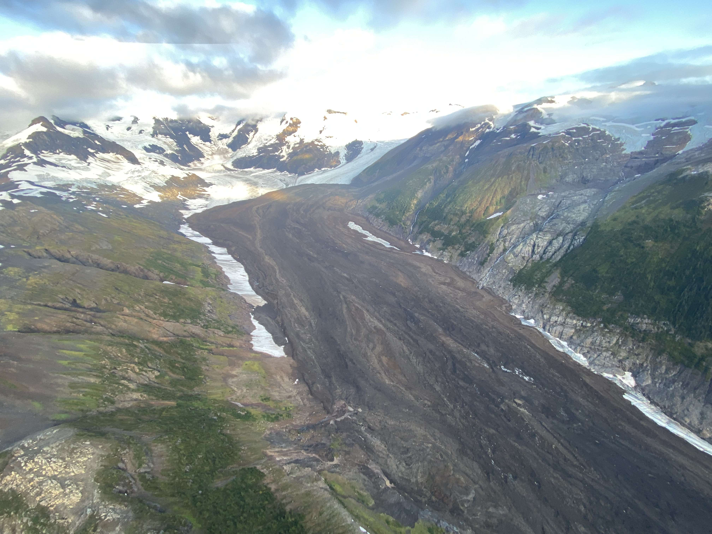
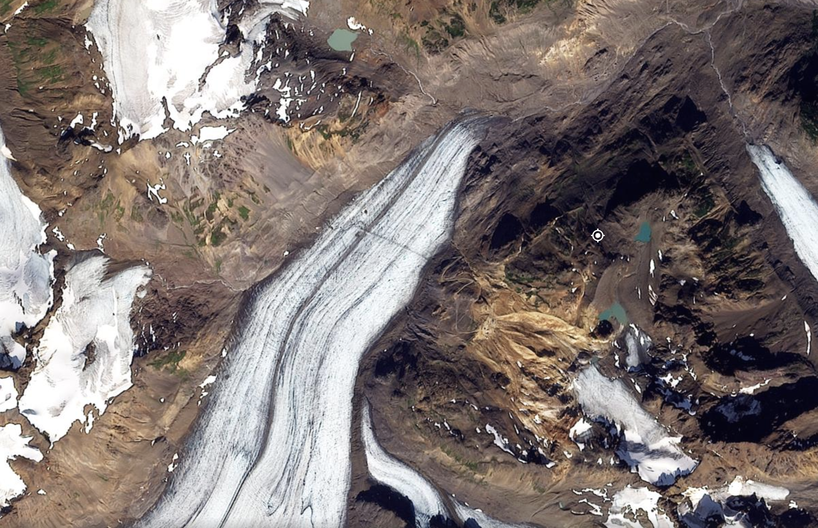
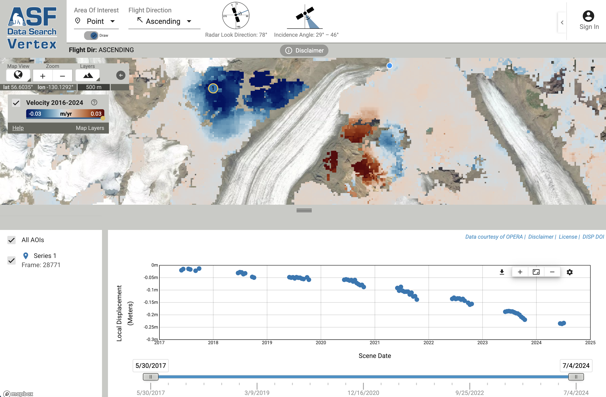
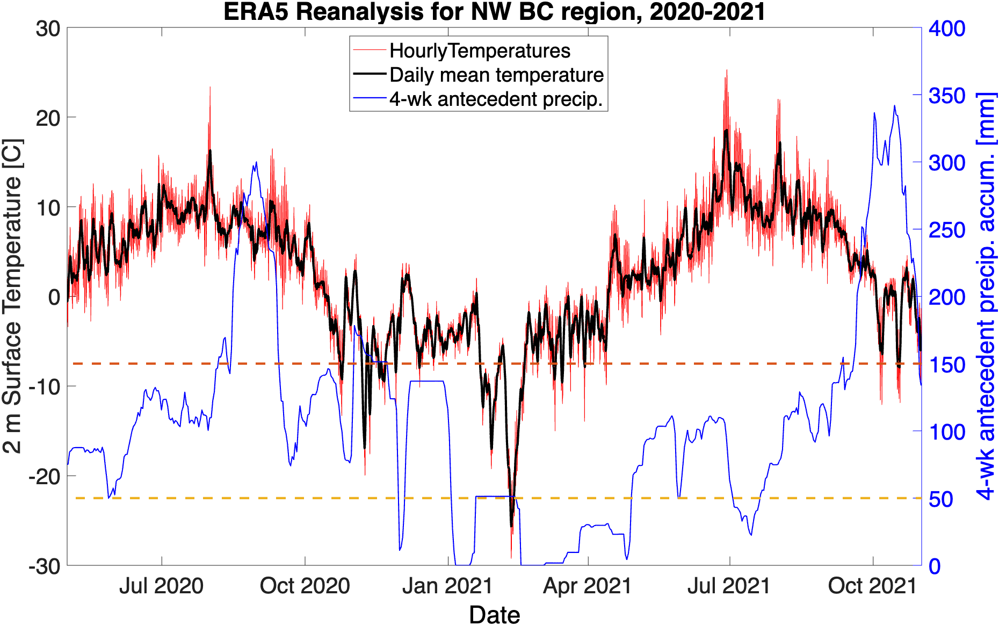

Landslides

Landslides in high lattitude alpine environments are projected to increase in magnitude and frequency in response to deglaciation, permafrost thaw, and extreme weather events. Satellite and seismic studies, as well as first person reports, have documented a high number of >10 million cubic meters landslide events in the past two decades in the Pacific Northwest that underscores this increasing risk to Alaskan and British Columbian communities. Despite the increasing number of observed landslide events, in-situ and temporally continuous monitoring of unstable mountain slopes and their response to the rapidly changing alpine environment remains elusive. Consequently, we lack a basic understanding of processes that prime or trigger catastrophic failure of unstable mountain slopes. Using tools learned in the mining industry, I'm expanding my research to study unstable mountain slopes in Alaska and British Columbia with the goal of helping local communities prepare themselves for this rapidly evolving geohazard risk.
Methods & data
I use field mapping, drone photogrammetry, satellite InSAR, GNSS, and weather data to study the structure and displacement of unstable mountain slopes.


